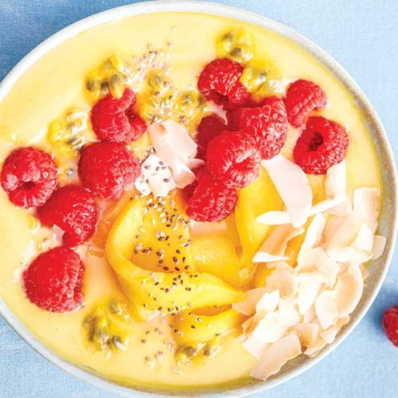

SWEETS

Tropical mango smoothie bowl
The tropical flavours of this healthy smoothie bowl will have you feeling like you're on a holiday in the islands! It's also gluten-free, high in calcium and ready in only 10 minutes.
Serves: 1
Time to make: 10 mins
Hands-on time: 10 mins
Nutrition Info (per serve)
Calories : 317cal
Kilojoules : 1333kJ
Protein : 7.9g
Total fat : 5.5g
Saturated fat : 3.1g
Carbohydrates : 51.9g
Sugars : 39.2g
Dietary fibre : 12.8g
Sodium : 131mg
Calcium : 321mg
Iron : 1.8mg
Ingredients
• ½ cup frozen chopped pineapple
• ¾ cup frozen diced mango
• 1 small carrot, grated
• 3oz reduced-fat plain yoghurt
• ½ cup unsweetened almond and coconut milk
• 2 teaspoons psyllium husks
• ¼ teaspoon ground turmeric
• ½ mango, sliced into wedges, to top
• 2 teaspoons toasted shaved coconut
• 1 passionfruit, pulp removed
• fresh raspberries and chia seeds for topping